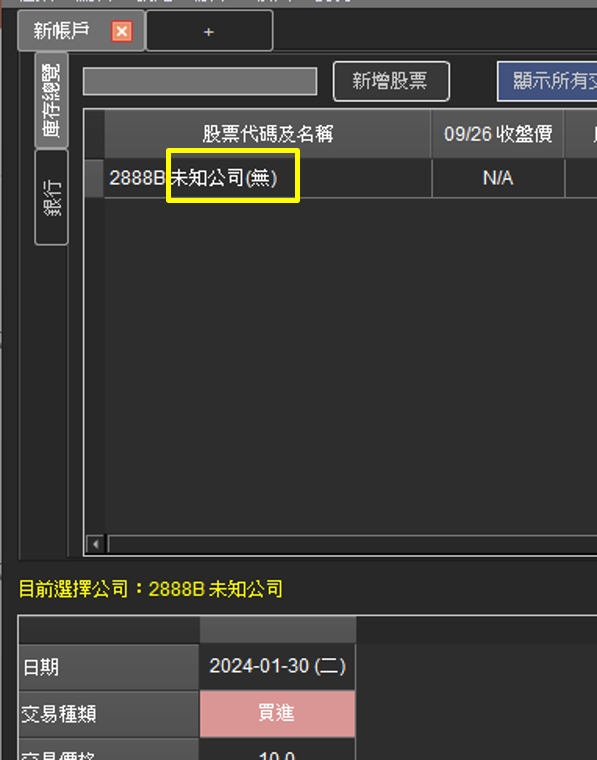
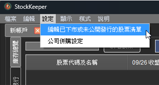
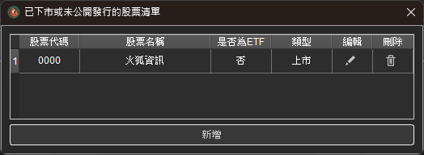
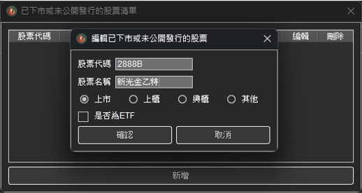
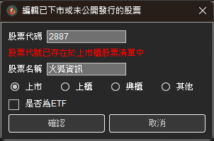
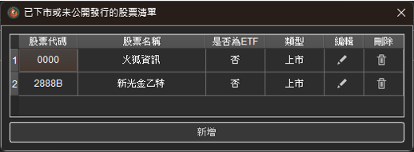
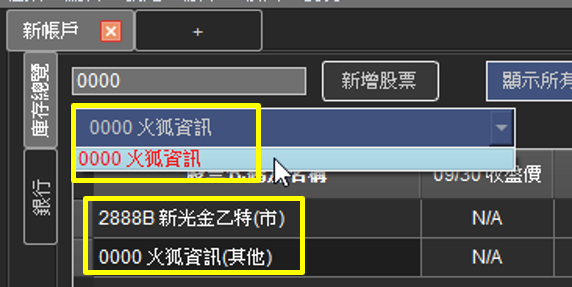

自訂股票代碼及名稱
若是公司被併購或是特別股的時間到期，那麼該股票代碼及相關資料就會從『公開資訊觀測站』被移除。因為 StockKeeper 的所有資料皆是從政府公開網站下載下來，因此資料被移除的話，連股票名稱都有可能沒辦法顯示。
例如圖例的 2888B 原本是新光金乙種特別股，但自從新光金被台新金併購後，這檔特別股就消失了。因此股票名稱就變成未知公司，但記錄過的交易資料還會存在。
以下介紹遇到這種情況的解決方式：
步驟一：開啟自訂股票代碼設定
點選工具列的「設定」並選擇「編輯已下市或未公開發行的股票清單」
步驟二：檢視及編輯已存在的自訂股票清單，或是新增自訂清單
開啟自訂股票代碼功能後，會看到已經存在的自訂股票清單，從這邊可以編輯或刪除現有的自訂股票代碼，也可以新增新的自訂股票代碼。
自訂股票代碼時，可以設定此股票為『上市』、『上櫃』、『興櫃』或『其他』，這不影響任何計算，單純只是顯示上的區分。
另外也可以設定該支股票是否為ETF。若設定為ETF，則證交稅的計算方式會有所不同 ( 0.3%->0.1% )。
自訂股票代碼時，不能設定為目前還存在的股票代碼。
設定完成後，就可以在股票列表裡面看到自訂的股票代碼及名稱了。
 